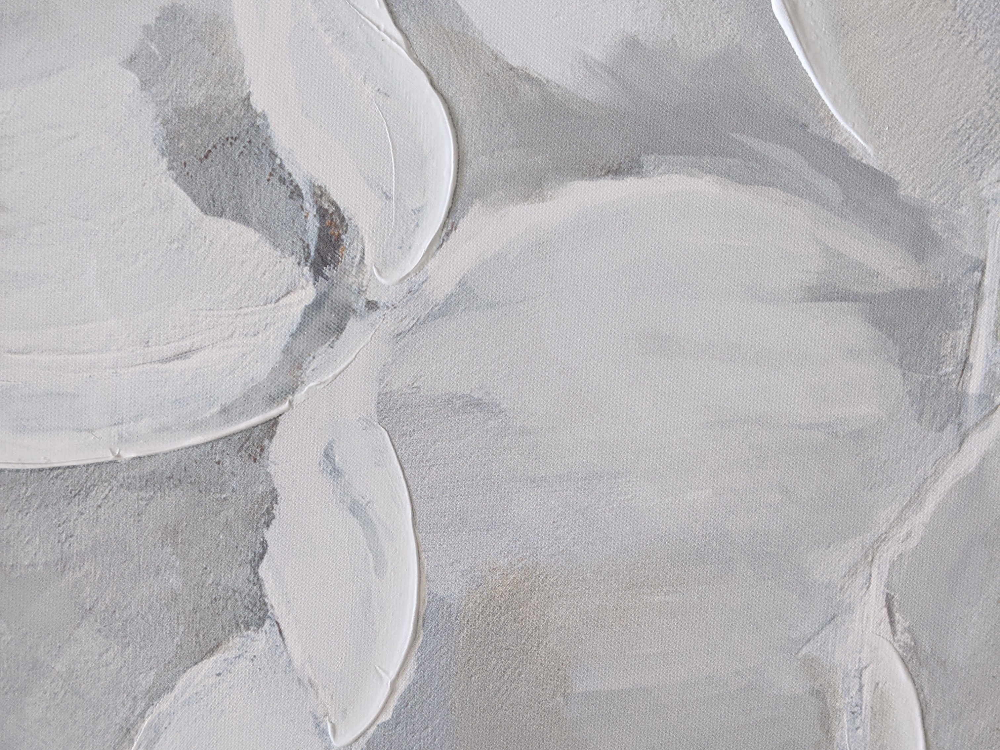
Fallen
The textured painting of white and grey, reminiscent of petals, captivates with its ethereal beauty and tactile allure. Each brushstroke and layer of texture intricately mimics the delicate contours and softness of petals, creating a mesmerizing visual and sensory experience. The predominantly white and grey palette imbues the artwork with a sense of purity and tranquility, evoking a serene atmosphere.
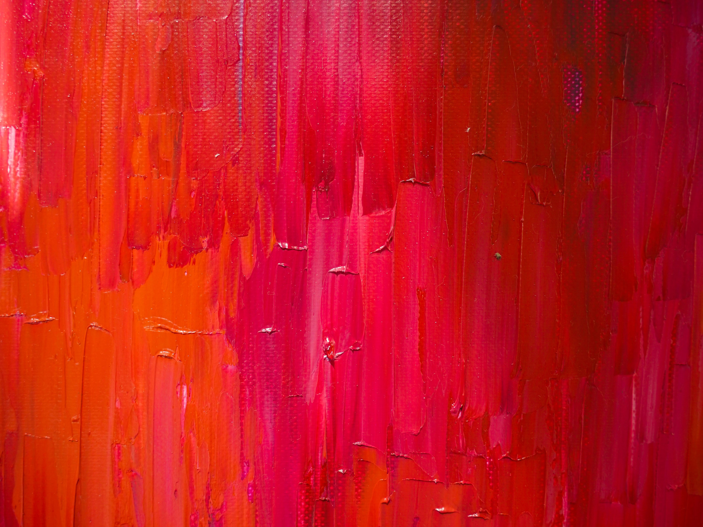
Crimson
"Crimson" invites contemplation of the dynamic interplay between bold expression and restrained elegance, capturing the essence of artistic tension and inviting viewers to explore the captivating duality within the painting.

Still
With a focus on capturing the essence of stillness, "Still" encourages viewers to embrace a moment of quiet reflection. The meditative work of hand carving linoleum is appreciated in the detailed petals of each flower and reflected in the serenity of the print's subject. As viewers engage with the print, they are invited to delve into their own inner stillness and find solace in the beauty of the present moment.
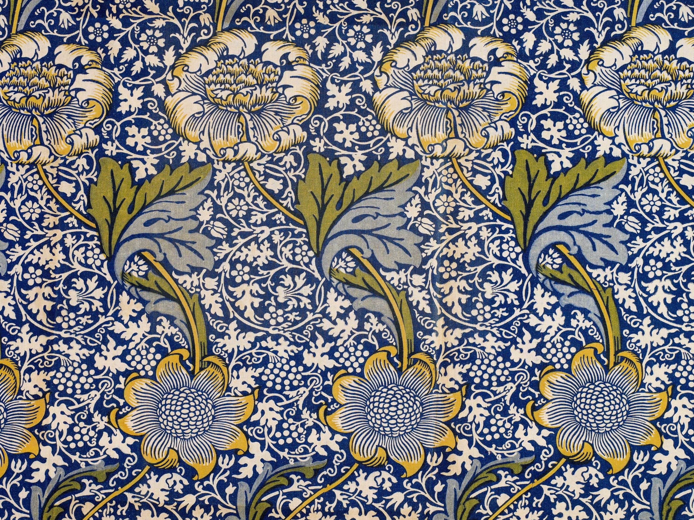
Sweeping
"Sweeping" is an exquisite print that showcases a mesmerizing array of dynamic and ornate flowers, meticulously captured in intricate detail. The composition is a masterful tapestry of vibrant petals, elegant stems, and delicate foliage, all intricately intertwined to create a harmonious dance of botanical beauty.
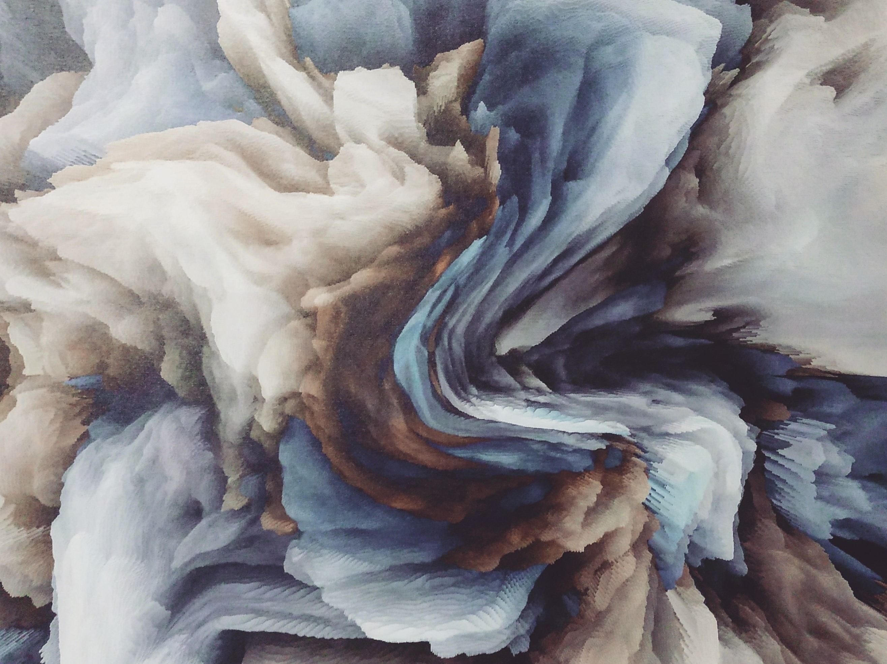
Restless
"Restless" is a captivating piece of fluid abstract art that embodies a sense of unbridled energy and movement. The artwork takes viewers on a mesmerizing journey through an exploration of muted colors and fluid forms. Created through an experimental process, the artist relinquishes precise control over the paint, allowing it to guide its own movement across the canvas.
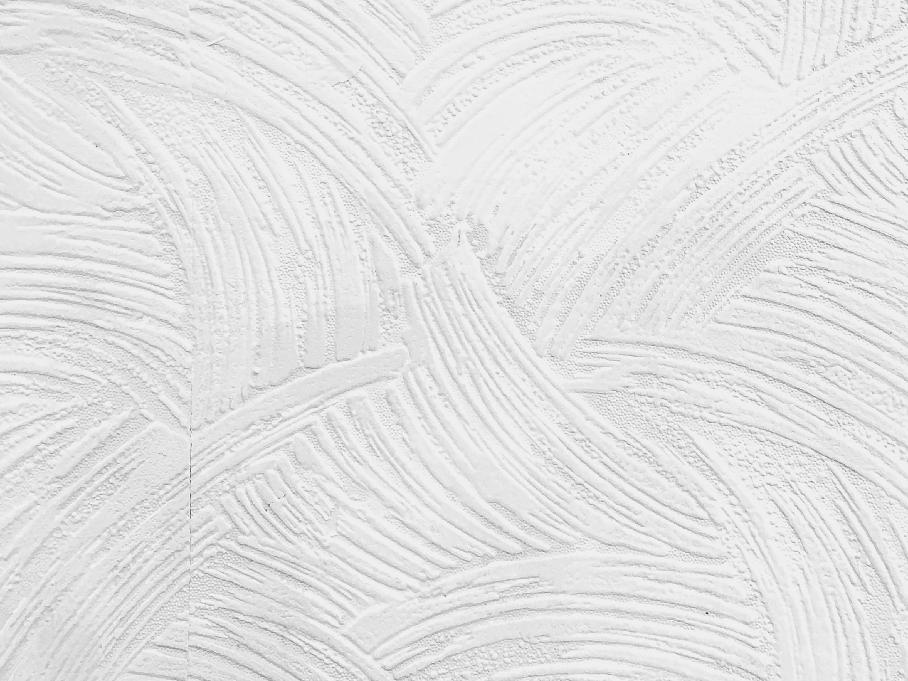
Tumult
"Tumult" captures the essence of a moment frozen in time, where the viewer is transported to the heart of a raging sea, feeling both the awe-inspiring grandeur and the overwhelming force that nature can unleash. The painting's textured waves beckon viewers to immerse themselves in the raw and untamed beauty of the natural world, provoking contemplation and a profound connection to the forces that shape our lives.
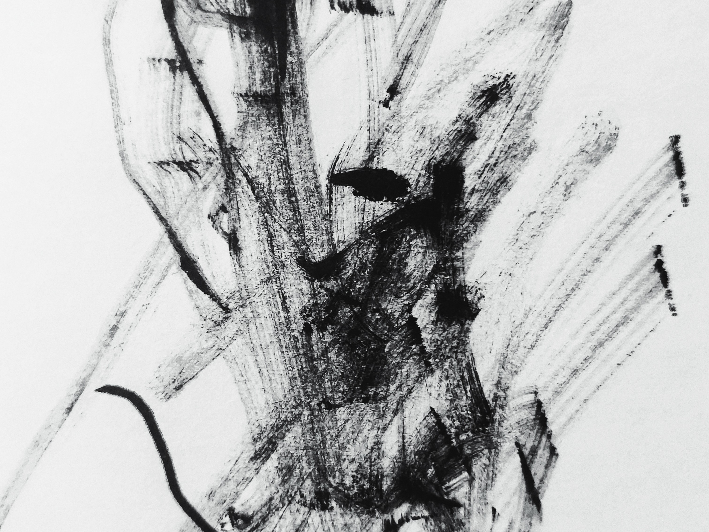
Free
"Free" is a captivating painting that explores the expressive power of chaos and liberation. Against a pristine white canvas, dynamic and chaotic black brushstrokes come alive, evoking a sense of raw energy and unrestrained freedom. The brushstrokes seem to dance and intertwine, creating a visual symphony of movement and spontaneity.
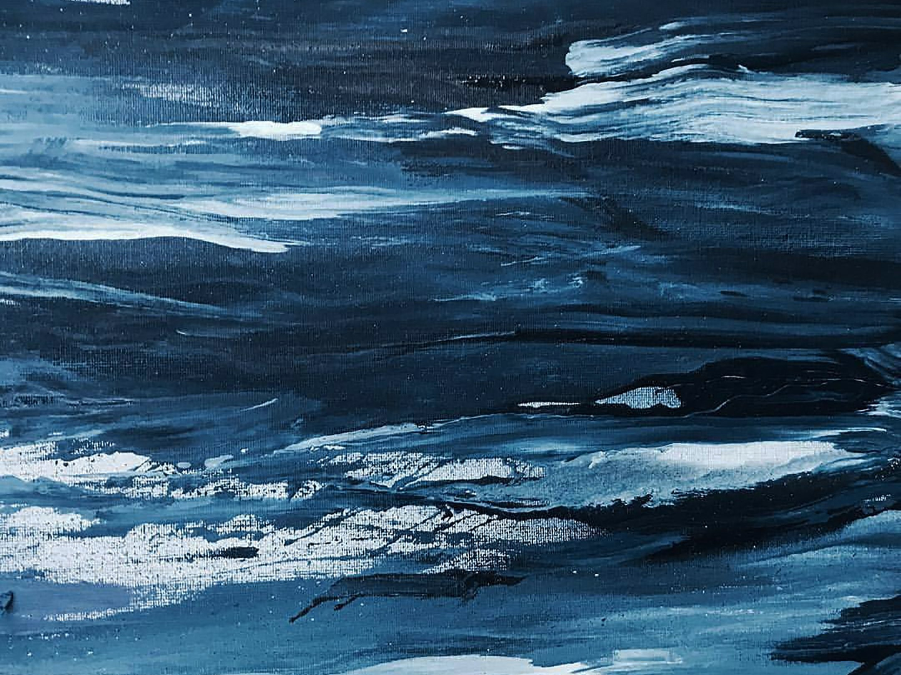
Deep
"Deep" encourages viewers to embrace the power of imagination, prompting them to wonder about the vastness that lies beneath the surface. It invites us to reflect on the mysteries and hidden wonders that the ocean holds, reminding us of the vastness and grandeur of the natural world.
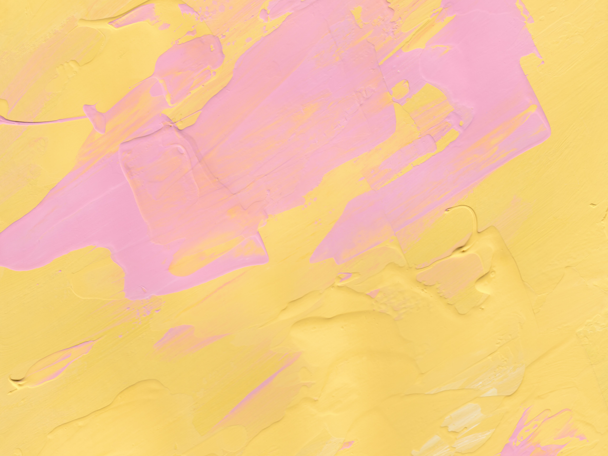
Soft Hues
"Soft Hues" is a captivating pastel painting that showcases a departure from the artist's usual palette, offering a serene and textured exploration of gentle colors. The artwork envelops viewers in a world of tranquility and softness, as delicate pastel tones delicately intermingle on the canvas.
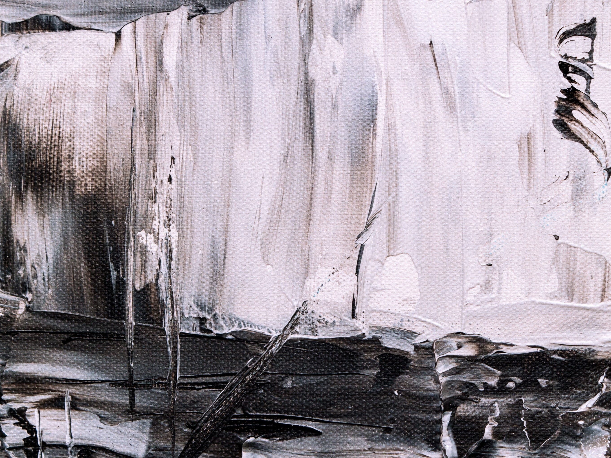
Bridge
The black and white abstract painting mesmerizes with its striking clash of contrasting shades, evoking a sense of boldness and tension. The dynamic interplay between black and white creates a visually captivating experience, where the two opposing forces engage in a dramatic dance on the canvas.
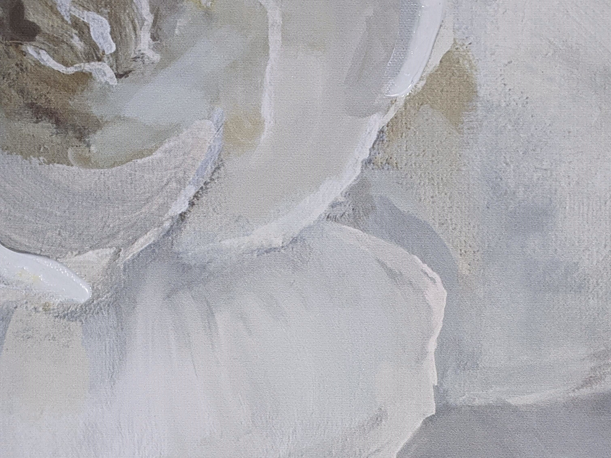
Enclosed
The painting delicately captures the ethereal beauty of flower petals in varying shades of white, offering a touch of realism that brings the soft shapes to life. Each petal is meticulously rendered, paying careful attention to the subtle curves, folds, and intricate details that make up their graceful forms.
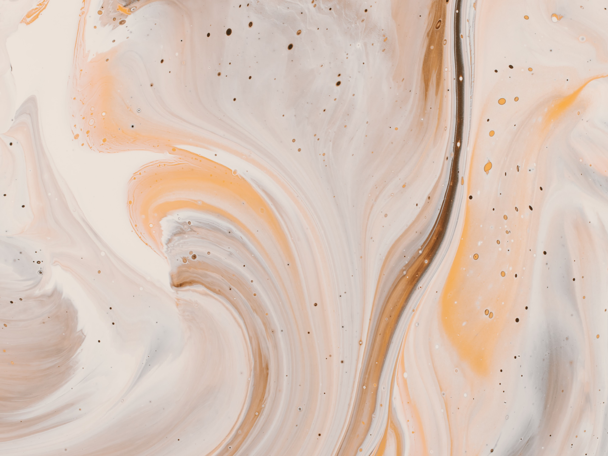
Release
"Release" is a captivating painting that embodies a sense of liberation and freedom, achieved through the artist's masterful use of a fluid paint technique. The artwork captures the essence of movement and spontaneity, as the fluid paint cascades and dances across the canvas with unrestrained energy. It is a visual manifestation of letting go and embracing the unpredictable nature of the creative process.

{kind=link}
{kind=link}
{kind=link}
{kind=link}
{kind=link}
{kind=link}
{kind=link}
{kind=link}
{kind=link}
{kind=link}
{kind=link}